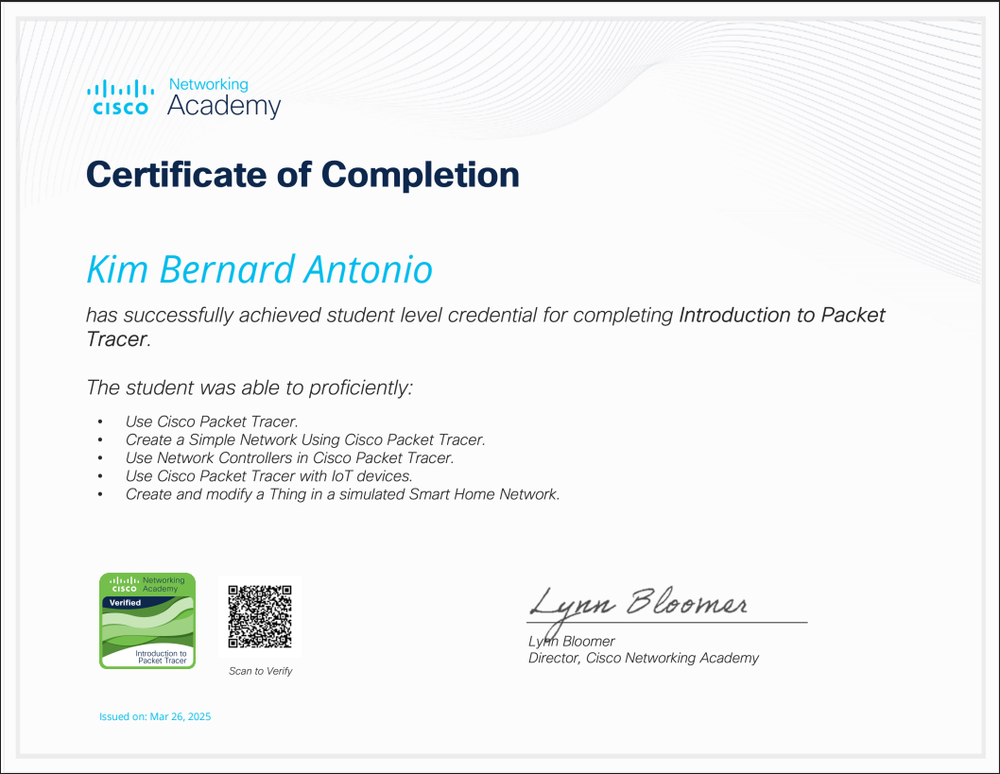

Kim Bernard D. Antonio
📍 Philippines | 📧 itskbb2804@gmail.com | 📱 +63 9957951147
💻 Aspiring Web Developer | IT Student | Tech Enthusiast
Technical Skills
● HTML, CSS, JavaScript (learning)
● Visual Studio Code
● Canva, Figma (UI/UX basics)
● Web structure, responsiveness
● Windows terminal (basic)
Soft Skills
● Detail-Oriented
● Fast Learner
● Team Player
● Adaptable
● Critical Thinker
● Strong Communication
Certifications

Personal Traits
● Persistent and goal-driven
● Faith-driven mindset
● Curious about how things work
● Loves minimalist, aesthetic design
Objective
Motivated and dedicated BSIT student with a passion for web technologies and design. Seeking opportunities to apply and enhance my skills in real-world development environments. Eager to contribute to innovative projects and continue learning in the ever-evolving tech industry.
Education
Bachelor of Science in Information Technology
2024-2025
Cavite State University - Silang Campus (3rd year)
Senior High Graduate (STEM)
2020-2021
Lumil Integrated National High School
Elementary Graduate
2014-2015
Pag-Asa Central School
Career Goal
To become a professional web developer who crafts user-centered, functional, and visually appealing digital experiences for individuals and businesses.